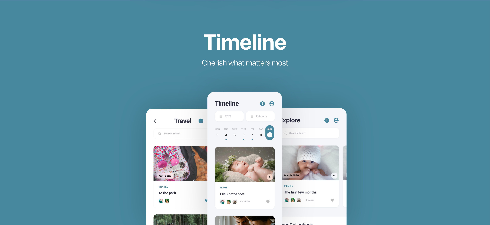

Overview
Problem
This was a recurring thought of mine ever since I saw Family YouTube channels. They document their child's growth and are able to share the memories with the world. While I didn't want to reach that extent - I wanted to always look back on my childhood and I often find myself asking my parents, "When was my first step?" or "When did I start talking" and they tell me but it's not captured in photos or videos explicitly.
Solution
I created an application that parents can use to add, store and share memories of their child easily. They can build their child's story as they will be adding milestones throughout to cherish and evenutally share with their child when they get older!
Timeline
4 weeks, Sep '20
Team
Solo Project
Roles and Responsibilities
I worked through the design process as a sole designer.
Cherish what matters most
DISCOVER
Initial Interviews
How many couples would want to document their child's early years and growth? These interviews allowed me to guage the parents this really could be for.
Here are the main questions I asked:
1. How old are you?
2. Are you married?
3. Do you have kids? And if not, do you plan on having them in the future?
4. Would you want to document milestones of your child's early years of growth?
5. What functions of the application would you expect?
Here's what I discovered:
1. Parents would find value in having a single go-to place to easily store their memories over applications like Facebook and Instagram.
2. Most would trust the application to keep their data private.
3. All would like the option to have a private network feature to share specific memories with their families.
4. Most would welcome a feature to celebrate milestones and also have timely parenting tips along the journey.
5. Most of the answers fell into my assumptions while some were out of my expectations. I was really happy about how intuitive and genuine the answers were.
DISCOVER
"How do we create an experience that empowers parents with the functionality to create memories of their children in one application?"
DISCOVER
User Personas

Based on my reserach, 67% did not have kids and 33% already had kids. The time allocation to kids were obviously vastly different but I wanted to empathize with the 2 main groups I was going to focus on - couples who are planning to have kids in the future and parents who already have kids. Using these personas, I was able to understand how busy life can be sometimes and it's important to capture the moments for the ones that are not able to experience it live. These two groups were in completely different stages of their life, but I knew that marketing to them with the right message was the key.
DISCOVER
Competitive Analysis
I studied dozens of applications that revolved around capturing a baby's growing moments. Many provided the same basic features but none provided a seamless experience to store and capture moments. In addition, none provided on-demand tips and information on parenting. In general, applications like these can play a big part in parenting so I thought about positives and things to look out for after researching competitors.

DISCOVER
Content Research
Which stage of a baby accounts for the most growth? To understand how feasible including parenting tips was and help cater my goals for the app, I needed to learn accurate information about the growth of a baby to make the experience complete.

DEFINE
A Newborn Confidence
After gathering all of my research and collecting my thoughts, I took some to to organize my insights for problem diagnosis. After synthesizing my research, I redefined the problem space. Photo storing applications are great tools to document your child's journey, but the majority lack the structure and support to create lasting memories and celebrate milestones - as well as providing useful tips that can help parents and help with the stress.
DEFINE
Synthesizing the Problem Spaces
To explore potential solutions, I mapped out the user journey to highlight the key problems that were communicated by the couples and that I was going to tackle. Through this exercise, I was able to solidify the structural principles that would satisfy the needs of all stakeholder groups.

DEFINE
The Solution

DEVELOP
Design System

DELIVER
Events added by you are organized chronologically
Whether you decide to view a year's or week's worth of events, you'll always have your memories right at your fingertips. The complete details such as the dates and locations will always be there so you don't have to argue over dates and locations.
Share your favorite moments with your family and friends
Your family and friends can leave comments and view what you choose - establishing a seamless path between the ones you care about the most.
DELIVER
The Explore page provides an overview and suggestions of events to view
Tagging your events with collections allows you to view events that are within the same genre.
DELIVER
The easiest way to add your favorite moments
It's really simple. Just select the photos to add - then click and edit each field with whatever information your heart desires.